Loading ...
|
4-2-3-1
|
Portugal | 5 | - | 0 | Uzbekistan |
3-4-2-1
|
| HT 3-0 | ||||||
|
FIFA World CupTuesday 23 June 2026
|
||||||
- Venue
- Houston Stadium
- Attendance
- 68,777
- Referee
- Jalal Jayed
Goal6'
Cristiano Ronaldo
Assist: João Cancelo
Goal17'
Nuno Mendes
Goal39'
Cristiano Ronaldo
Assist: Bruno Fernandes
- 2
Substitution46'
João Cancelo
Nélson Semedo
Pedro Neto
Francisco Conceição
Own goal60'
A. Nematov
Substitution63'
João Félix
Trincão
Yellow card68'
Renato Veiga
Substitution76'
João Neves
Bernardo Silva
Substitution83'
Vitinha
Rafael Leão
Goal87'
Rafael Leão
Whistle45+7'
45+7'
Yellow card14'
O. Khamrobekov
- 2
Substitution46'
S. Nasrullaev
K. Alijonov
O. Khamrobekov
A. Mozgovoy
Substitution73'
A. Fayzullayev
I. Sergeev
- 2
Substitution90+2'
B. Karimov
R. Jiyanov
O. Shukurov
S. Esanov
Portugal | |
|---|---|
Goalkeeper | |
| 1 | Diogo Costa |
Defender | |
| 3 | Rúben Dias |
| 13 | Renato Veiga 68' |
| 20 | João Cancelo 46' |
| 25 | Nuno Mendes 17' |
Midfielder | |
| 8 | Bruno Fernandes |
| 11 | João Félix 63' |
| 15 | João Neves 76' |
| 18 | Pedro Neto 46' |
| 23 | Vitinha 83' |
Forward | |
| 7 | Cristiano Ronaldo 6'39' |
Substitutes | |
| 2 | Nélson Semedo 46' |
| 10 | Bernardo Silva 76' |
| 16 | Trincão 63' |
| 17 | Rafael Leão 83'87' |
| 26 | Francisco Conceição 46' |
Uzbekistan | |
Goalkeeper | |
| 12 | A. Nematov 60' |
Defender | |
| 2 | A. Khusanov |
| 5 | R. Ashurmatov |
| 18 | A. Abdullaev |
Midfielder | |
| 7 | O. Shukurov 90+2' |
| 9 | O. Khamrobekov 14'46' |
| 13 | S. Nasrullaev 46' |
| 19 | A. G'aniev |
| 22 | A. Fayzullayev 73' |
| 24 | B. Karimov 90+2' |
Forward | |
| 14 | E. Shomurodov |
Substitutes | |
| 3 | K. Alijonov 46' |
| 6 | A. Mozgovoy 46' |
| 10 | R. Jiyanov 90+2' |
| 21 | I. Sergeev 73' |
| 23 | S. Esanov 90+2' |


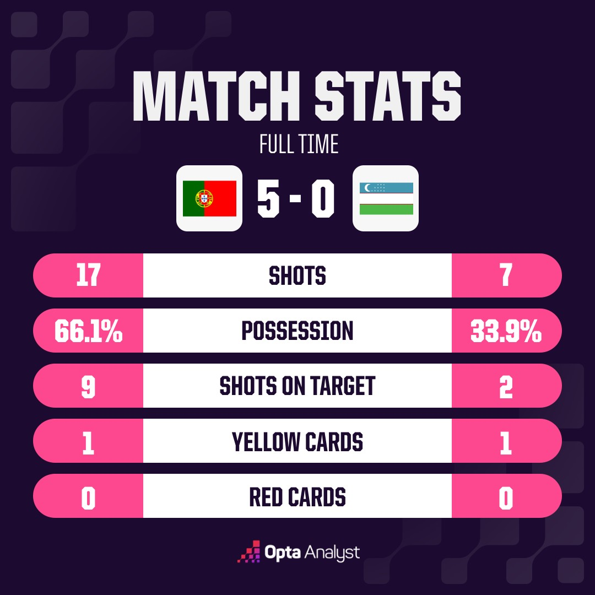
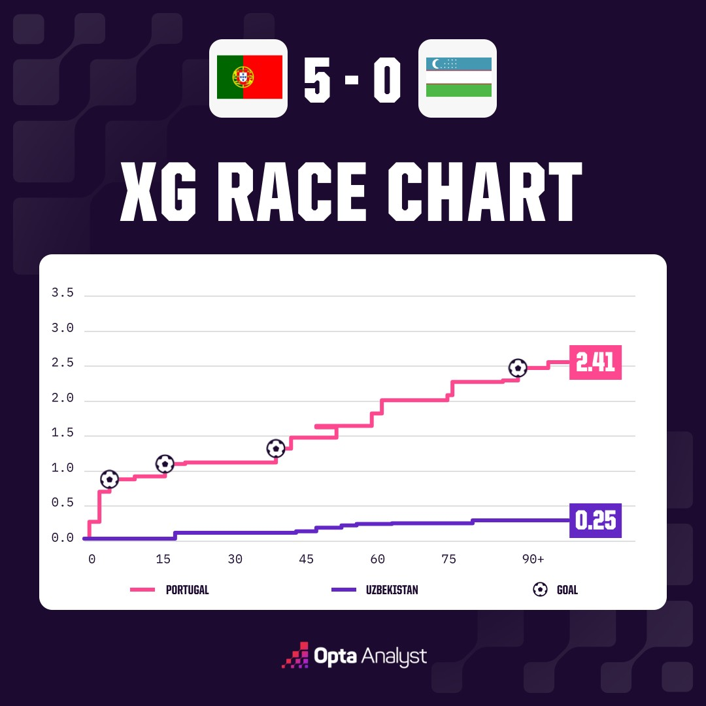
97'
Uzbekistan attempted 7 shots in this game, their lowest total in a single match in the 2026 FIFA World Cup.
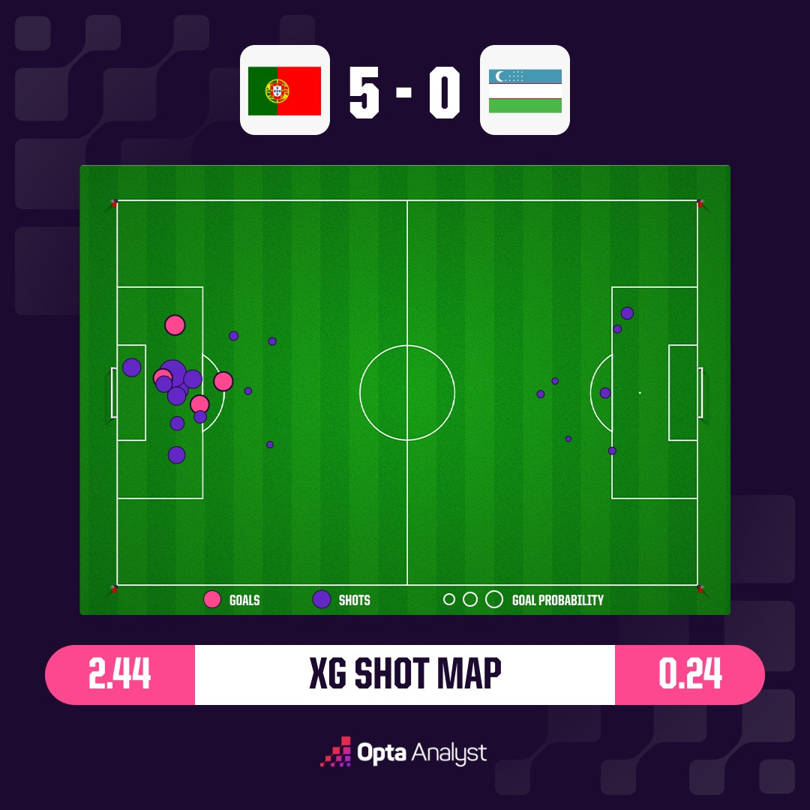
90+6'
Portugal WIN! It’s all over at Houston Stadium, with Portugal coming out on top 5-0 over Uzbekistan, thanks to goals from Nuno Mendes, Rafael Leão, Cristiano Ronaldo and Abduvokhid Nematov.
90+5'
No luck – it’s offside! Cristiano Ronaldo looked to dart in behind and get on the end of a pass, yet they just went too early, and the flag is up to signal offside.
90+5'
Cristiano Ronaldo goes in on Khojiakbar Alijonov and concedes a foul. The free-kick is not in a particularly dangerous area from Portugal’s viewpoint, though.
90+3'
Offside! Igor Sergeev thought they were through on goal, but the Portugal defence stepped up in time to catch them offside, and the assistant referee puts their flag up.
90+3'
MISS! A shot from Trincão ends up being off target. They might have done a bit better with that one, but it remains Portugal 5-0 Uzbekistan.
90+3'
A foul from Aziz G'aniev on Rafael Leão sees Portugal win a free-kick, but it is not in a dangerous position, so Uzbekistan should be confident they can defend it easily enough.
90+2'
Substitution! Sherzod Esanov replaces Otabek Shukurov for Uzbekistan as the manager shuffles the pack. Can Sherzod Esanov make an impression as this match continues?
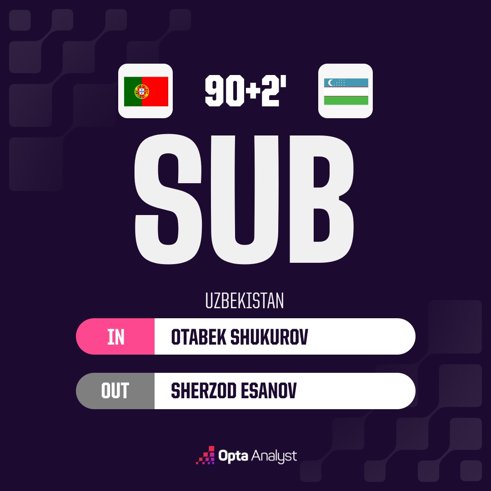
90+2'
A substitution for Uzbekistan sees Bekhruz Karimov replaced by Ruslanbek Jiyanov. There does not appear to be any obvious sign of an injury, so that is a tactical switch.
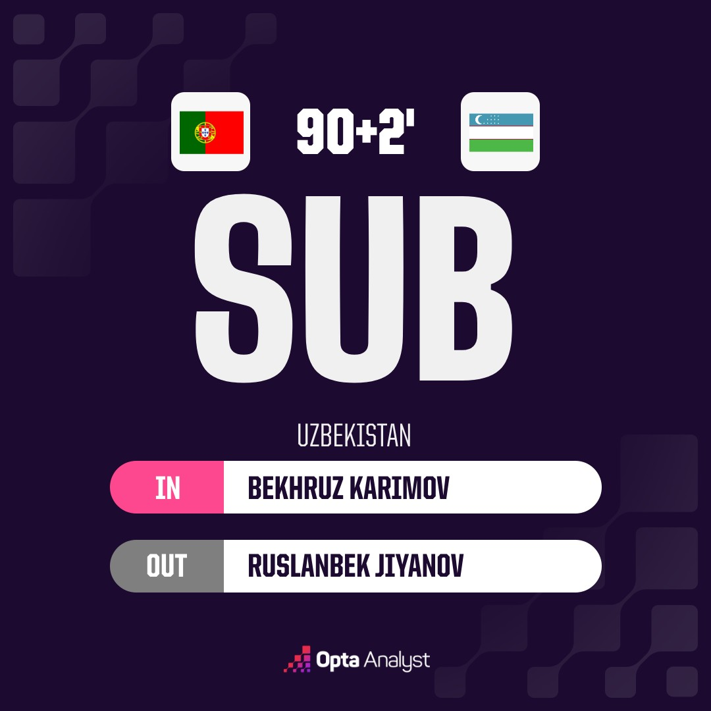
90+1'
Good play from Bekhruz Karimov, who draws a foul from Rafael Leão to hand Uzbekistan a free-kick in a dangerous position. Will they create something from this set-piece?
87'
Rafael Leão has scored his first goal in the 2026 FIFA World Cup, netting for the first time since 6th December 2022 against Switzerland.
87'
GOAL! Rafael Leão scores, and Portugal are now well in front – surely they will go on and see this one out now? It seems a long way back for Uzbekistan, with Portugal well in control of this match.
87'
A foul from Bekhruz Karimov on Nuno Mendes sees Portugal win a free-kick, but it is not in a dangerous position, so Uzbekistan should be confident they can defend it easily enough.
86'
It’s backs to the wall now — Portugal throwing everything into defending their advantage, with a flurry of crucial interventions.
85'
The Uzbekistan defence steps up in time and there is a frustration for Cristiano Ronaldo, who thought they were through until the flag goes up to signal offside.
84'
Bruno Fernandes goes for goal with a strike from distance, but Abduvokhid Nematov is able to watch it all the way and make the save. A bit of a tester, there.
83'
Vitinha’s match is over as Portugal decide to make a substitution. Rafael Leão enters the field in what looks like a tactical change.
80'
A rash challenge from Nuno Mendes, who sends Bekhruz Karimov tumbling, giving Uzbekistan a free-kick. It is not in a threatening position, but it gives them a chance to get back on the ball.
79'
Khojiakbar Alijonov goes in on Francisco Conceição and concedes a foul. The free-kick is not in a particularly dangerous area from Uzbekistan’s viewpoint, though.
78'
No luck! Eldor Shomurodov takes on a shot that, had they got it right, might have been set to test the goalkeeper, but instead it is sent off target and Portugal come away unscathed.
76'
There are 15 minutes plus added time to go in this match. Portugal have had more of the ball so far with a possession figure of 66.31%, while Uzbekistan have had 33.69%.
76'
João Neves’s match is over as Portugal decide to make a substitution. Bernardo Silva enters the field in what looks like a tactical change.
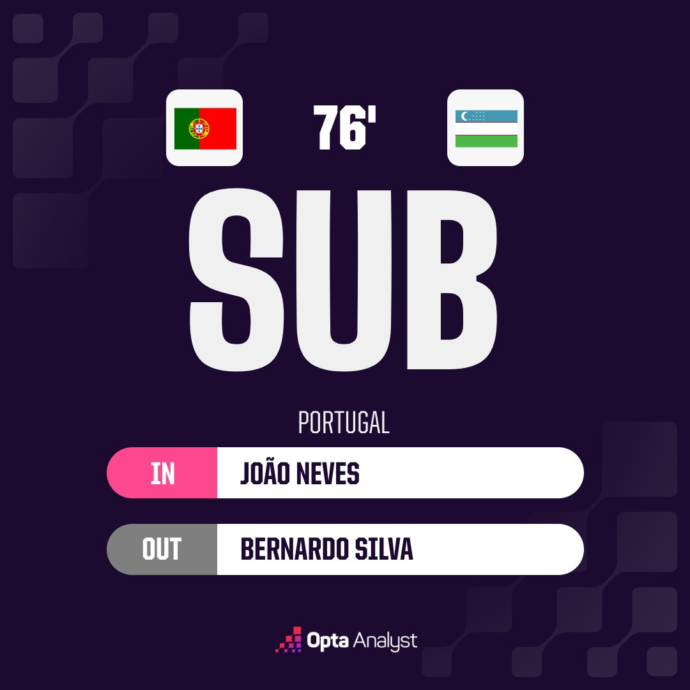
75'
A foul from Rustam Ashurmatov on João Neves sees Portugal win a free-kick, but it is not in a dangerous position, so Uzbekistan should be confident they can defend it easily enough.
75'
In the last 15 minutes, it is Portugal who have dominated the ball, having seen 71.88% of the possession, yet they have not been able to go and turn that into a goal just yet, with their opponents standing firm.
74'
A foul from Eldor Shomurodov on Rúben Dias sees Portugal win a free-kick, but it is not in a dangerous position, so Uzbekistan should be confident they can defend it easily enough.
74'
Save! A big stop from Abduvokhid Nematov, who reacts to keep out Cristiano Ronaldo's attempt from inside the area.
73'
Abbosbek Fayzullayev’s match is over as Uzbekistan decide to make a substitution. Igor Sergeev enters the field in what looks like a tactical change.
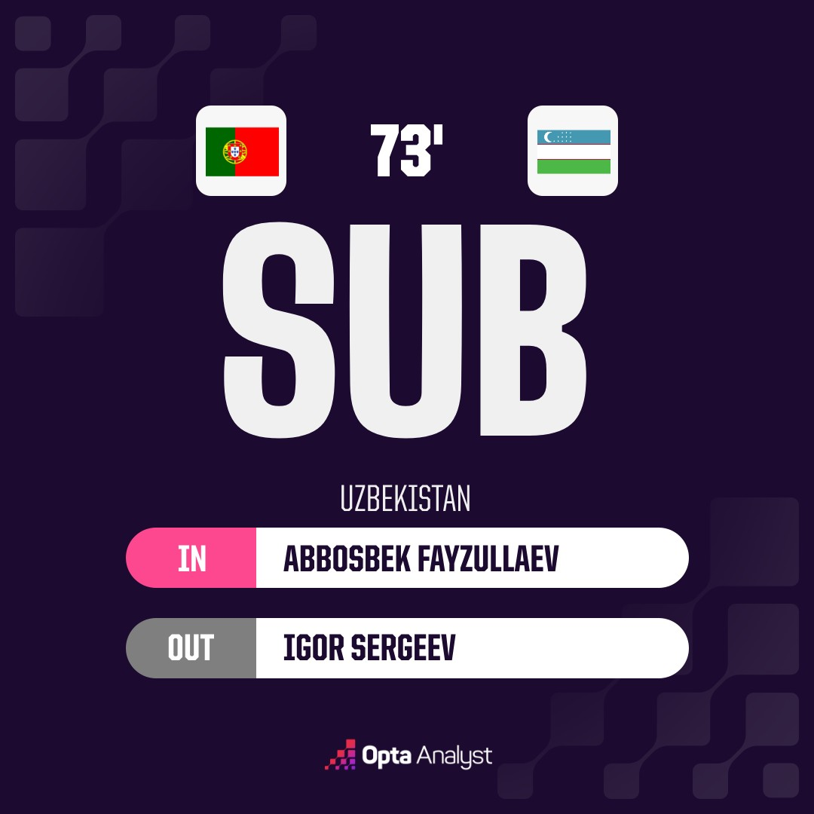
72'
Eldor Shomurodov makes a run in behind but the Portugal defensive line were alert, and stepped up in time to catch them offside. That run just needed to be timed better.
72'
Neither team has had a shot in the past 10 minutes, as this match just enters something of a down period. Portugal have seen more of the ball, with 80 per cent possession, but Uzbekistan are keeping them away from goal. There is still a chance the match will spark into life, though.
68'
The referee goes to their pocket and pulls out a yellow card, which is brandished in the direction of Renato Veiga. Will they be able to avoid a second booking?
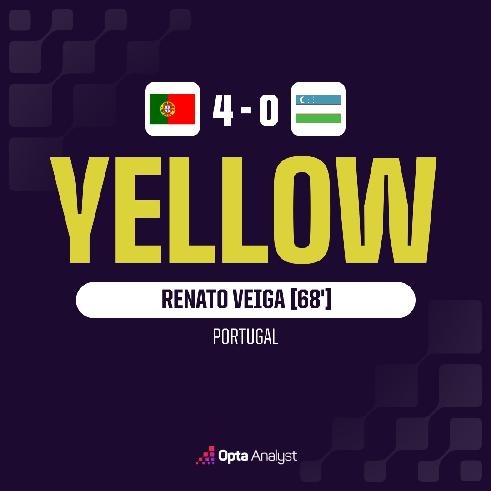
68'
Renato Veiga goes in on Aziz G'aniev and concedes a foul. The free-kick is not in a particularly dangerous area from Portugal’s viewpoint, though.
66'
A free-kick in a dangerous position now for Portugal, after a foul from Bekhruz Karimov on Nuno Mendes. Can Portugal make Uzbekistan pay for that rashness from Bekhruz Karimov?
66'
With 25 minutes left to play, this game is about to go into its final quarter. So, that seems a good chance to check on the shot count. Portugal have had 12 efforts, with 6 of those hitting the target. Uzbekistan, on the other hand, have had 6 shots, getting 2 of those attempts on target.
65'
Still behind, but Uzbekistan are refusing to roll over - defensive urgency rising as they fend off more pressure and push for a late turnaround.
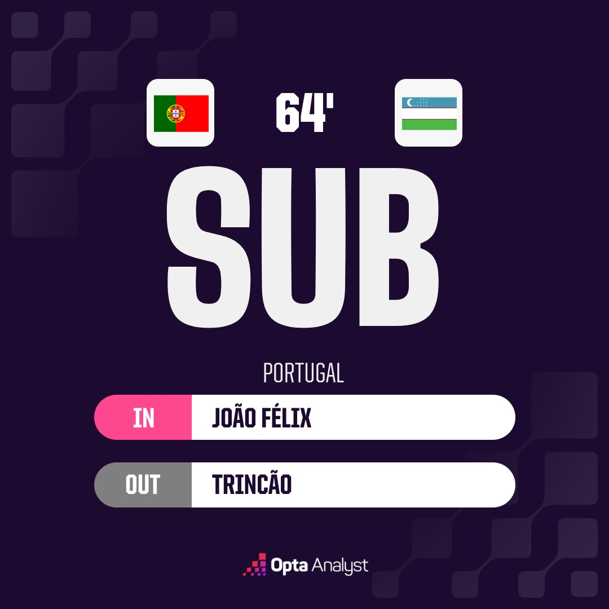
64'
Substitution! Trincão replaces João Félix for Portugal as the manager shuffles the pack. Can Trincão make an impression as this match continues?
63'
A foul from Bruno Fernandes on Otabek Shukurov sees Uzbekistan win a free-kick, but it is not in a dangerous position, so Portugal should be confident they can defend it easily enough.
62'
BLOCK! An intervention from João Neves might have just prevented a goal, with the defending player getting in the way of an attempt from Aziz G'aniev. Solid defending there!
60'
GOAL! Oh dear – it’s getting even worse for Uzbekistan! They are now 4 goals behind, after Abduvokhid Nematov turns into their own net. What a calamity, and that just compounds their misery.
60'
MISS! João Félix fluffs their lines, and will Portugal be made to pay for that miss? Uzbekistan could have been down and out if that attempt had gone in, but at least they have not fallen even further behind in this contest.
58'
Cristiano Ronaldo has attempted 5 shots, the first time he has attempted at least 5 shots in a match in the FIFA World Cup since facing Uruguay on 30th June 2018 (6 shots).
58'
MISS! Cristiano Ronaldo fluffs their lines, and will Portugal be made to pay for that miss? Uzbekistan could have been down and out if that attempt had gone in, but at least they have not fallen even further behind in this contest.
57'
Good play from Cristiano Ronaldo, who draws a foul from Abdulla Abdullaev to hand Portugal a free-kick in a dangerous position. Will they create something from this set-piece?
55'
Otabek Shukurov's effort is deflected out for a corner. Can Uzbekistan make anything of this set-piece?
53'
A free-kick in a dangerous position now for Portugal, after a foul from Bekhruz Karimov on João Félix. Can Portugal make Uzbekistan pay for that rashness from Bekhruz Karimov?
52'
Save! A big stop from Diogo Costa, who reacts to keep out Abbosbek Fayzullayev's attempt from inside the area.
50'
A free-kick to Uzbekistan, as Vitinha goes in and fouls Otabek Shukurov. However, Portugal will not mind giving one away in this area too much, with plenty of distance to their goal.
47'
MISS! The score remains 3-0, with Uzbekistan relieved after Portugal’s João Félix goes for goal but sends their attempt off target. Not one to write home about, that one.
46'
Pedro Neto’s match is over as Portugal decide to make a substitution. Francisco Conceição enters the field in what looks like a tactical change.
46'
João Cancelo’s match is over as Portugal decide to make a substitution. Nélson Semedo enters the field in what looks like a tactical change.
46'
Substitution! Khojiakbar Alijonov replaces Sherzod Nasrullaev for Uzbekistan as the manager shuffles the pack. Can Khojiakbar Alijonov make an impression as this match continues?
46'
Uzbekistan are making a tactical change. Odiljon Khamrobekov is leaving the field and in their place comes Akmal Mozgovoy – we will soon see if this switch has the desired impact.
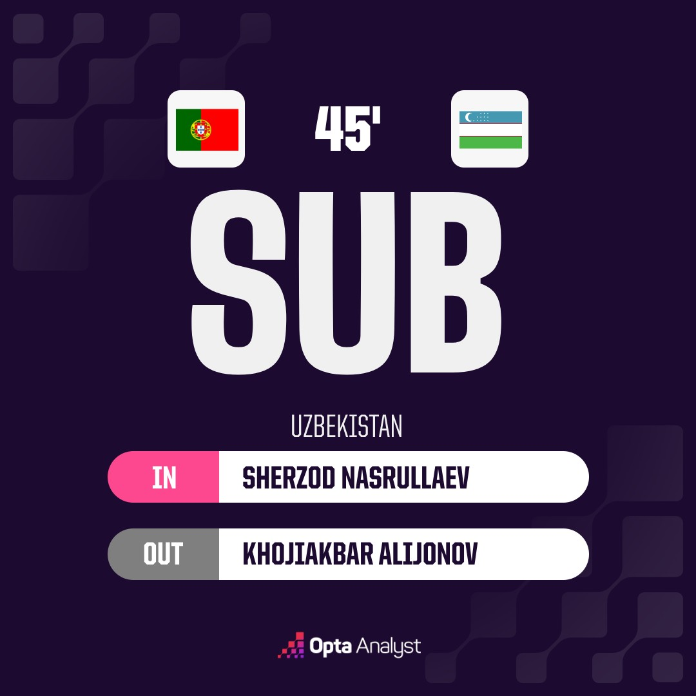
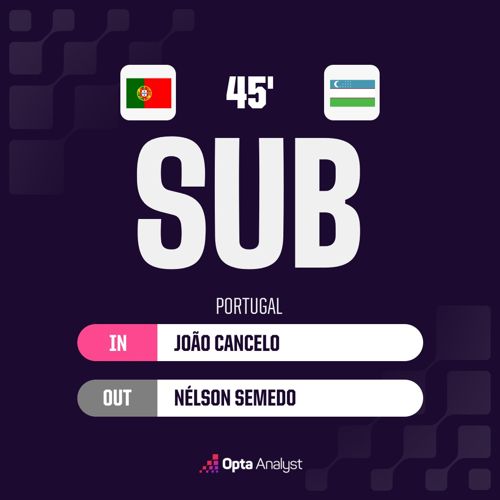
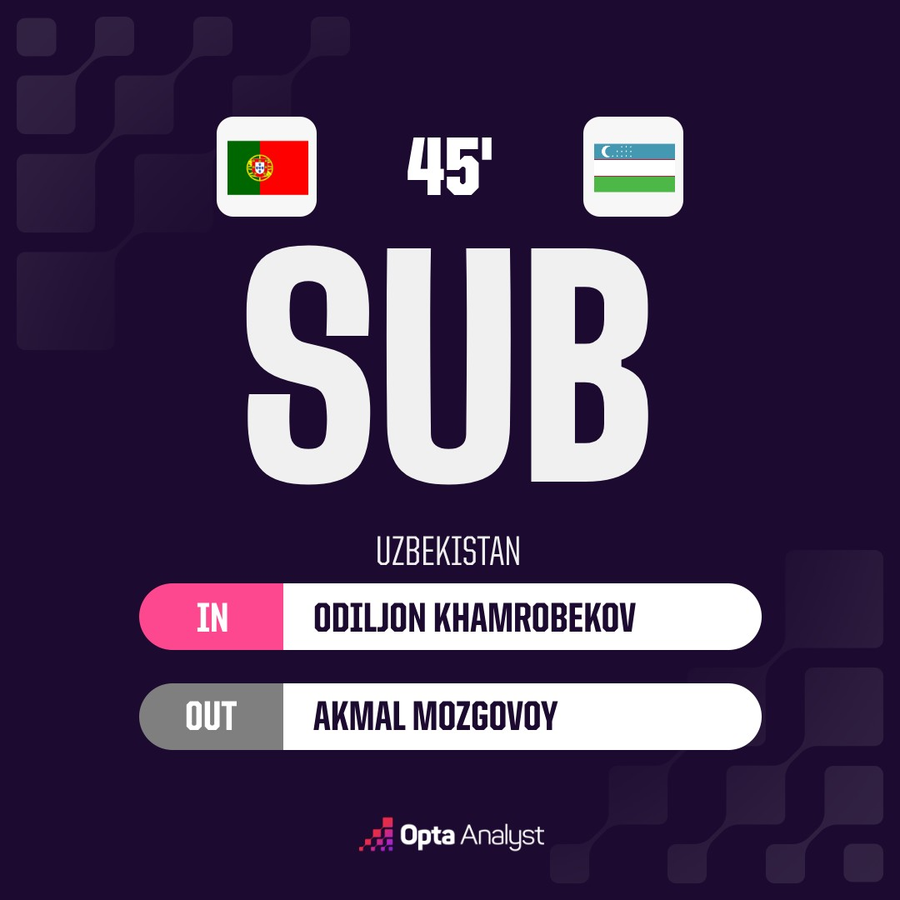
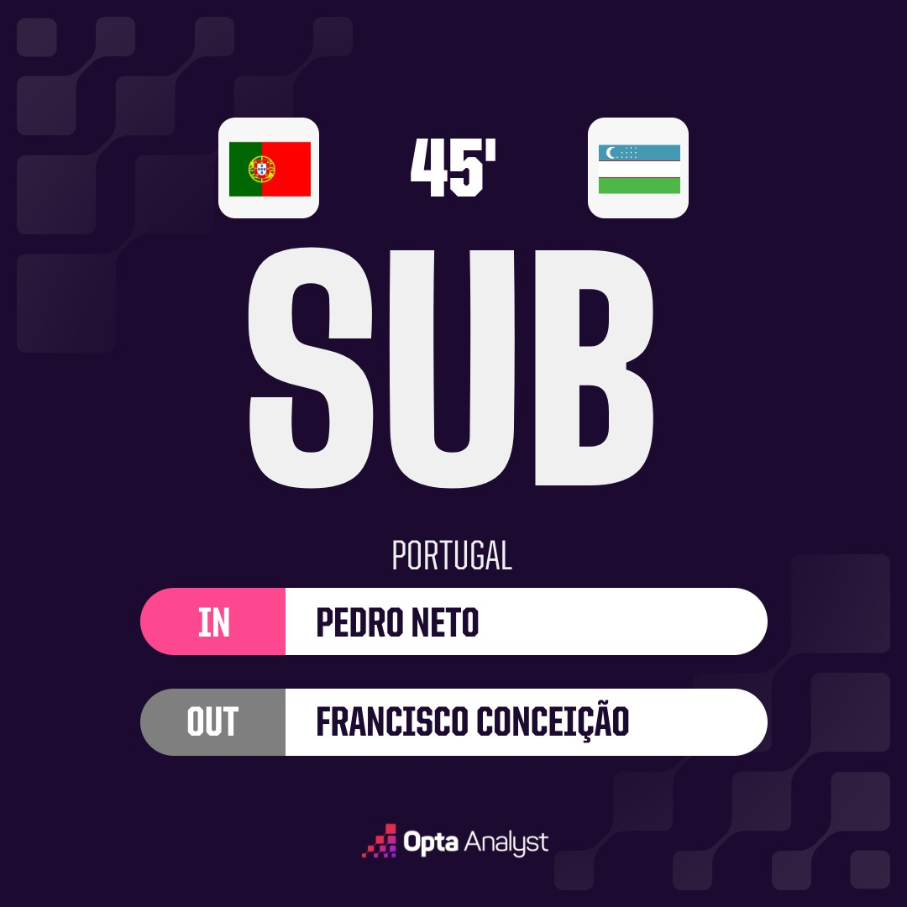
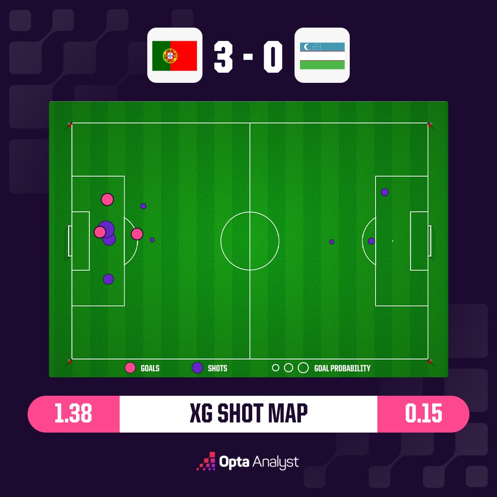
45+7'
Half-time! We reach the interval at Houston Stadium and it is Portugal who have a 3-0 lead over Uzbekistan. Can they hold on and see this out in the second half?
45+6'
An opportunity for Portugal to extend their lead goes begging, as Cristiano Ronaldo is unable to convert from a good opening. Will they live to regret that miss?
45+6'
Despite trailing, Uzbekistan are showing real defensive grit, digging in and stopping further damage as they try to build a platform.
45+4'
Nuno Mendes goes in on Bekhruz Karimov and concedes a foul. The free-kick is not in a particularly dangerous area from Portugal’s viewpoint, though.
45+2'
Shot blocked! Odiljon Khamrobekov unleashes an attempt at goal, but the ball does not reach its target thanks to Renato Veiga, who makes a solid block to stem the danger – for now.
45+2'
A foul from Rúben Dias on Eldor Shomurodov sees Uzbekistan win a free-kick, but it is not in a dangerous position, so Portugal should be confident they can defend it easily enough.
45+1'
Despite trailing, Uzbekistan are showing real defensive grit, digging in and stopping further damage as they try to build a platform.
43'
MISS! A shot from Otabek Shukurov ends up being off target. They might have done a bit better with that one, but it remains Uzbekistan 0-3 Portugal.
42'
A free-kick to Uzbekistan, as João Cancelo goes in and fouls Abbosbek Fayzullayev. However, Portugal will not mind giving one away in this area too much, with plenty of distance to their goal.
42'
What a chance! That should really have been another goal for Portugal, who would have extended their lead had João Félix kept their composure, but instead Uzbekistan survive that opportunity. Can they make their luck count?
39'
Bruno Fernandes has assisted his first goal in the 2026 FIFA World Cup.
39'
Portugal have scored 3 goals in the FIFA World Cup game for the first time since 6th December 2022 against Switzerland (W6-1).
39'
Cristiano Ronaldo has scored his 10th goal in the FIFA World Cup.
39'
GOAL! Cristiano Ronaldo scores, and Portugal are now well in front – surely they will go on and see this one out now? It seems a long way back for Uzbekistan, with Portugal well in control of this match.
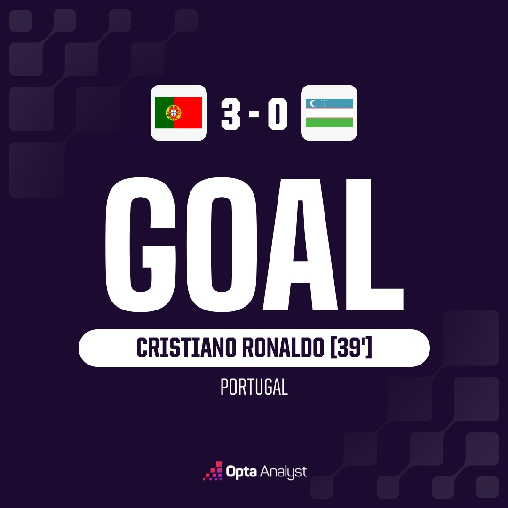
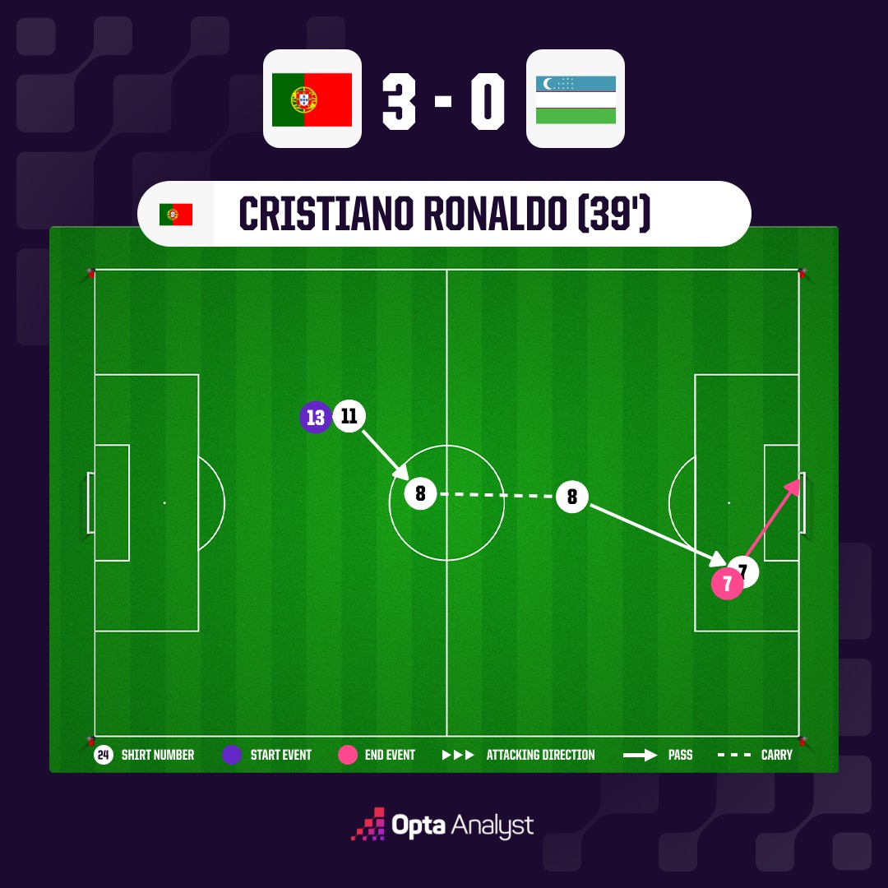
38'
Great defending from Portugal, who are staying organised and winning key battles to preserve their lead.
36'
Despite trailing, Uzbekistan are showing real defensive grit, digging in and stopping further damage as they try to build a platform.
36'
Good play from Nuno Mendes, who draws a foul from Otabek Shukurov to hand Portugal a free-kick in a dangerous position. Will they create something from this set-piece?
34'
A free-kick to Uzbekistan, as João Félix goes in and fouls Abdulla Abdullaev. However, Portugal will not mind giving one away in this area too much, with plenty of distance to their goal.
31'
Great defending from Portugal, who are staying organised and winning key battles to preserve their lead.
31'
This game is certainly in a bit of a lull now, with neither team having had an attempt at goal in the past 10 minutes. It could do with something to spark it into life. Uzbekistan have had more possession during the quiet spell, but are yet to do much with it.
30'
VAR overturns the decision! The video official sees enough reason for the original call to be overturned, and so elects to intervene here.
30'
VAR! The technology is now intervening – will the referee’s decision be overturned, or will it stand? Let’s wait and see.
29'
A free-kick to Portugal, as Abbosbek Fayzullayev goes in and fouls João Cancelo. However, Uzbekistan will not mind giving one away in this area too much, with plenty of distance to their goal.
28'
Vitinha goes in on Odiljon Khamrobekov and concedes a foul. The free-kick is not in a particularly dangerous area from Portugal’s viewpoint, though.
26'
A foul from Nuno Mendes on Bekhruz Karimov sees Uzbekistan win a free-kick, but it is not in a dangerous position, so Portugal should be confident they can defend it easily enough.
23'
Free-kick! A foul from João Cancelo on Eldor Shomurodov. It is well away from Portugal’s goal, so it is unlikely to result in a chance for Uzbekistan.
22'
Foul! A free-kick now in a dangerous area for Portugal, after Bruno Fernandes is fouled by Abdulla Abdullaev. Can Portugal make the most of this opportunity?
21'
MISS! A shot from Vitinha ends up being off target. They might have done a bit better with that one, but it remains Portugal 2-0 Uzbekistan.
21'
Uzbekistan may be behind, but they’re battling hard defensively to stop the gap from widening. A gritty response at the back.
20'
Good play from Nuno Mendes, who draws a foul from Bekhruz Karimov to hand Portugal a free-kick in a dangerous position. Will they create something from this set-piece?
19'
CLOSE! Sherzod Nasrullaev gets into a decent shooting position inside the Portugal area, and manages to find space to get an effort off. However, Diogo Costa is equal to it.
17'
GOAL! Nuno Mendes scores, and Portugal are now well in front – surely they will go on and see this one out now? It seems a long way back for Uzbekistan, with Portugal well in control of this match.
17'
Nuno Mendes has scored his first goal in the 2026 FIFA World Cup.
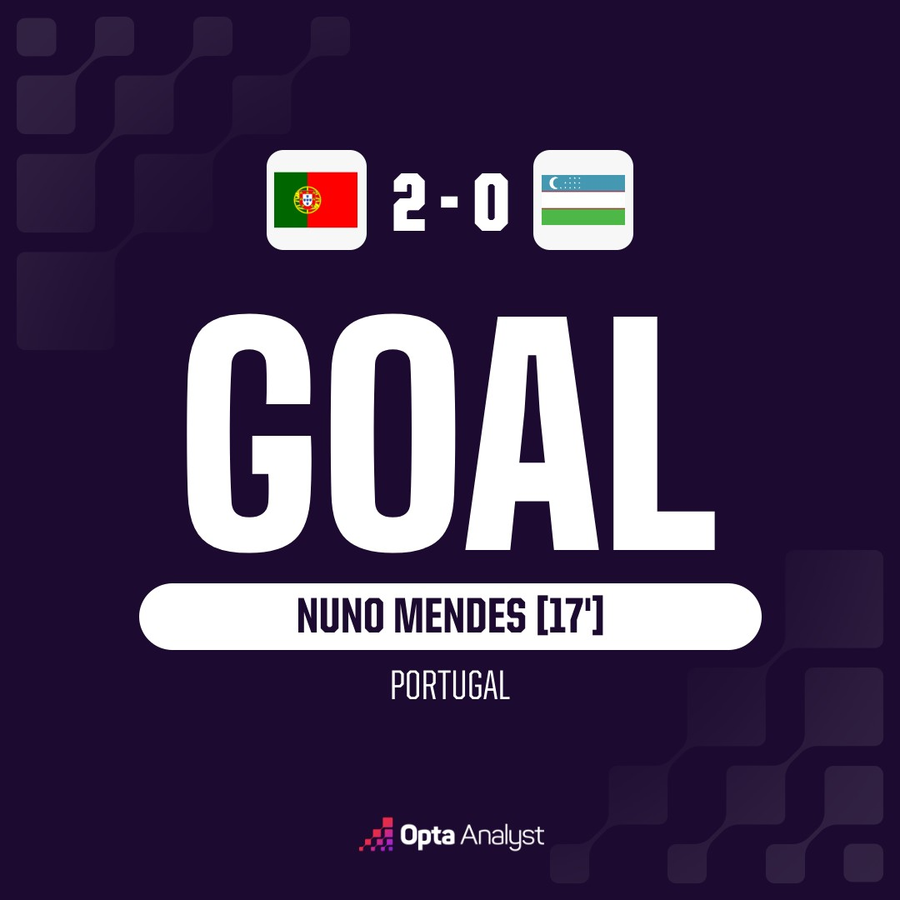
14'
A yellow card for Uzbekistan's Odiljon Khamrobekov. They will have to walk a tightrope for the rest of this match, and Portugal will likely look to target them and draw a second bookable offence.
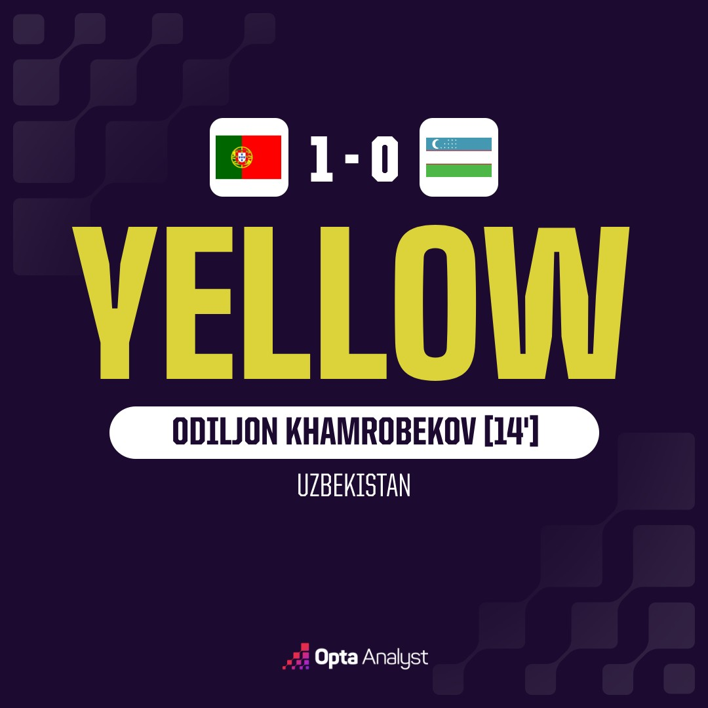
14'
Can Portugal make this chance count? They have won a free-kick in a threatening position after a foul from Odiljon Khamrobekov on Pedro Neto. Will Uzbekistan's defence be tested here?
11'
Uzbekistan may be behind, but they’re battling hard defensively to stop the gap from widening. A gritty response at the back.
11'
Great block from Otabek Shukurov, as they get in the way of an attempt from João Cancelo that might have been set to cause the goalkeeper some problems. Solid defending from the Uzbekistan player.
10'
Good play from João Félix, who draws a foul from Bekhruz Karimov to hand Portugal a free-kick in a dangerous position. Will they create something from this set-piece?
6'
João Cancelo has assisted his first goal in the 2026 FIFA World Cup.
6'
Cristiano Ronaldo has scored his ninth goal in the FIFA World Cup.
6'
GOAL! Portugal are ahead early on! Cristiano Ronaldo applies the finish from inside the box and opens the scoring. What a start for Portugal, who lead 1-0.
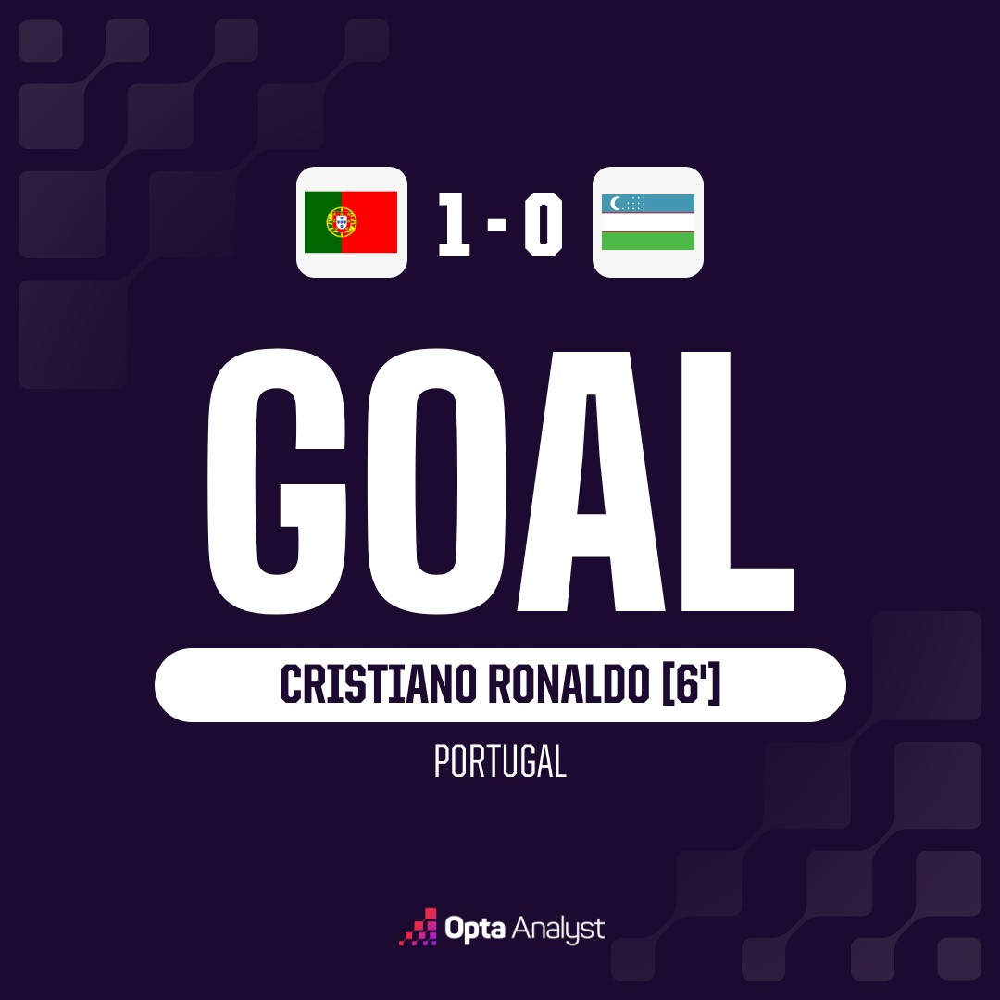
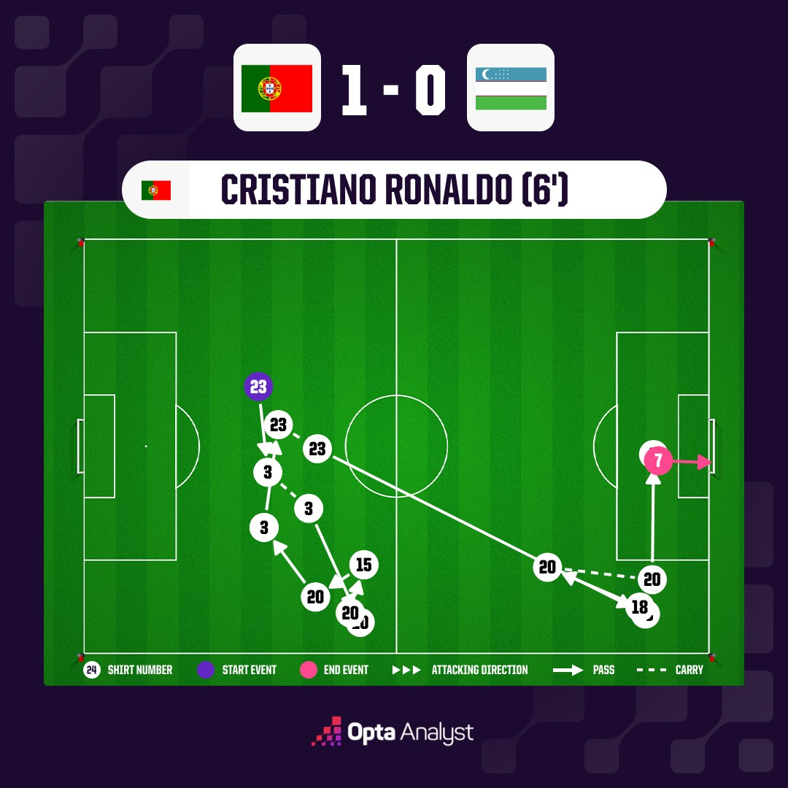
6'
Eldor Shomurodov goes in on Renato Veiga and concedes a foul. The free-kick is not in a particularly dangerous area from Uzbekistan’s viewpoint, though.
5'
It’s been tight so far, and Uzbekistan are making sure it stays that way with strong defensive discipline and well-timed clearances.
4'
WHAT A MISS! Oh dear, oh dear, that is an awful attempt from Cristiano Ronaldo, as a huge chance for Portugal to score the goal they need goes begging. What a let off for Uzbekistan, though. They will have to defend better than that from here on out!
2'
Portugal win a corner after Bruno Fernandes sees a shot diverted wide by Abdulla Abdullaev. Can Portugal make this opportunity count, or will Uzbekistan defend this?
1'
We are under way as Uzbekistan kick off at Houston Stadium. Let's hope an entertaining contest is in store.
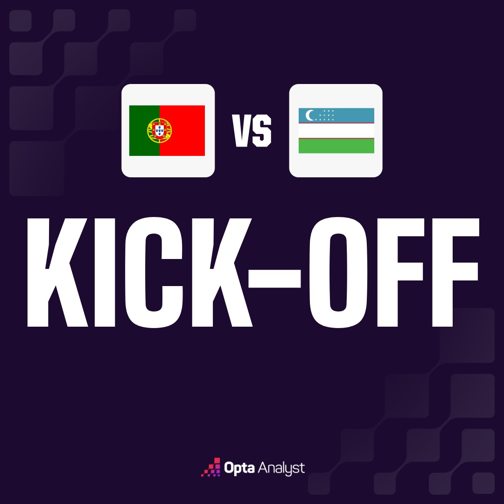
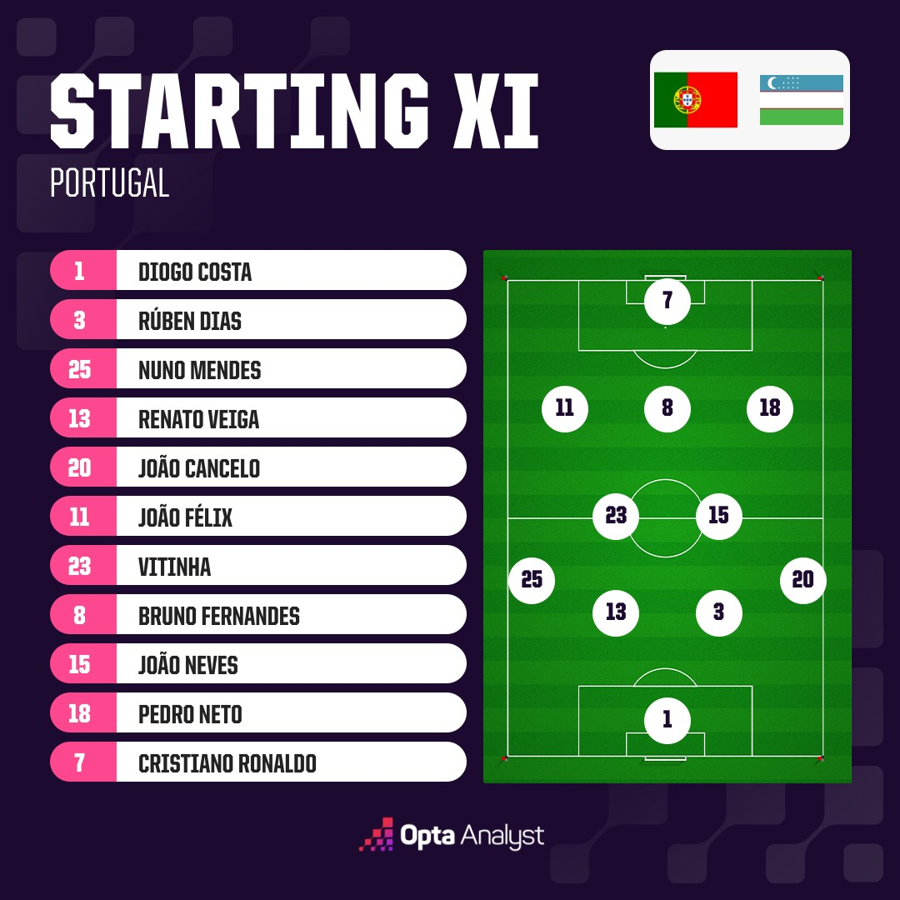
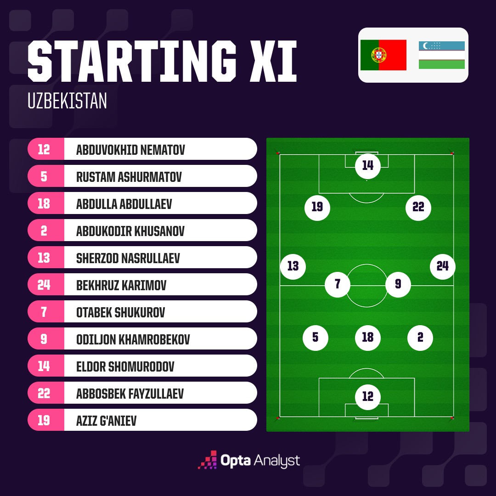
Cristiano Ronaldo is making his 24th appearance in the FIFA World Cup.
João Neves has scored in the last 2 games for Portugal
João Neves has scored in the last 2 home games for Portugal
Portugal face Uzbekistan on Tuesday at Houston Stadium in a meeting of teams who have yet to earn a win early in the FIFA World Cup group stage.
Portugal played out a 1-1 draw in their opening World Cup group stage match against Congo DR on June 17. João Neves scored in the draw. They are undefeated in their last six games in all competitions.
Uzbekistan slumped 3-1 against Colombia in their opening World Cup group stage game, a June 17 clash at Mexico City Stadium, their third straight defeat. Abbosbek Fayzullaev was the only player on the scoresheet in the loss. In 2026, they have won two and lost three.
Portugal are third in the group on one point, while Uzbekistan's zero points place them fourth. Colombia are sitting first in the group on three points. Congo DR are second on one point.
Neves leads Portugal in World Cup scoring after netting against Congo DR. With a goal against Colombia, Fayzullaev is the early leading World Cup scorer for Uzbekistan.
In their last six matches in all competitions, Portugal have won four and drawn two. The Portuguese side scored 16 and conceded four in that period, scoring first in five of the six contests. They had eight first-half goals, while their opponents netted three times in the first 45 minutes. Uzbekistan have won three and lost three in their last six. The Uzbek side scored five and conceded eight over that stretch, failing to score first in any of the six. All of their goals came after halftime, while their opponents netted two times before the break.
-
General
Possession 65.9% 65.88834.11234.1% Possession lost in defensive half 19 194141 Possession lost in middle third 44 444949 Duels 106 106104104 Duels success rate 50.9% 50.94343.26943.3% Aerial duels 17 171717 Aerial duels won 64.7% 64.70635.29435.3% Successful dribbles 14 1488 Fouls won 15 151414 Offsides 2 222 Corner awarded 3 322 -
Distribution
Passes 624 624327327 Long passes 40 403030 Long passes proportion (%) 6.4% 6.419.1749.2% Passing accuracy 89.9% 89.90480.12280.1% Passes in opponents' half 366 366151151 Passing accuracy in opponents' half (%) 85.0% 84.97369.53669.5% Total passes in the final third 175 1757474 Passing accuracy in final third (%) 78.3% 78.28670.2770.3% Forward passes 372 372197197 Forward passes (%) 59.6% 59.61560.24560.2% Through balls 6 644 Final third entries 78 783131 Penalty area entries 36 361313 Total open play crosses 17 1755 Crosses 22 2288 Crossing accuracy 22.7% 22.72700.0% -
Attack
Goals 5 500 Shots 17 1777 Shots on target 9 922 Blocked shots 3 333 Headed shots 0 000 Shots outside the box 5 533 Shots inside the box 12 1244 Shots accuracy excluding blocked shots 64.3% 64.2865050.0% Shooting accuracy 52.9% 52.94128.57128.6% Key Passes 9 977 -
Defence
Tackles 14 141818 Tackles success rate 71.4% 71.42972.22272.2% Clearances 16 163030 Interceptions 6 61414 Recoveries 50 504646 Attacking third recovery 4 411 Defensive third recovery 20 203131 Midfield third recovery 26 261414 Recoveries in attacking half (%) 8.0% 82.1742.2% -
Discipline
Fouls conceded 14 141515 Yellow cards 1 111 Red cards 0 000